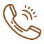
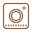

<nav class="navbar navbar-expand-lg bg-white p-lg-0 shadow-lg" aria-label="Eighth navbar example"><div id="first-part"><div class="row"><div class="text-first-part col-lg-8 col-sm-12 row"><p id="text-localizacao" class="col-xl-6 col-sm-12 text_info">Av. Moaci, 974 - Moema, São Paulo - SP</p><p id="text-telefone" class="col-xl-4 col-sm-12 text_info">(11) 5080-7800</p></div><div class="col-lg-4 col-sm-12 lista-de-icons"><ul class="position-relative d-flex justify-content-evenly d-inline"><li class="nav-item m-auto"></li><li class="nav-item m-auto"></li><li class="nav-item m-auto"></li><li class="nav-item m-auto"></li></ul></div></div></div></nav><nav class="navbar navbar-expand-lg bg-white p-lg-0 shadow-lg" aria-label="Eighth navbar example"><div id="second-part"><div class="row container-full-hd"><a class="navbar-brand position-relative p-0 col-xxl-5 col-sm-12" href="index.html"><picture class="img-fluid"><source media="(min-width:1920px)" srcset="assets/img/logo_hospital_moriah.png"><source media="(min-width:1200px)" srcset="assets/img/logo_hospital_moriah.png"></picture></a><div class="collapse navbar-collapse col-8" id="navbarsExample07"><ul class="navbar-nav position-relative d-flex justify-content-evenly m-auto w-100 font-menu"><li class="nav-item m-auto"><a class="nav-link active text-uppercase fs-6" aria-current="page" href="index.html">Início</a></li><li class="nav-item m-auto"><a class="nav-link text-uppercase fs-6" href="_o-que-e.html">O que é?</a></li><li class="nav-item m-auto"><a class="nav-link text-uppercase fs-6" href="_prevencao-e-rastreio.html">Prevenção e Rastreio</a></li><li class="nav-item m-auto"><a class="nav-link text-uppercase fs-6" href="_news.html">News</a></li><li class="nav-item m-auto"><a class="nav-link text-uppercase fs-6" href="_contato.html">Contato</a></li><a id="btn-desktop" class="btn btn-lg btn-nav font-menu" href="_cancer-de-prostata.html">O CÂNCER DE PRÓSTATA</a></ul></div><button class="navbar-toggler z-index-1" type="button" data-bs-toggle="collapse" data-bs-target="#navbarsExample07" aria-controls="navbarsExample07" aria-expanded="true" aria-label="Toggle navigation"><hr><p></p><p class="text-menu">MENU</p></button> <a id="btn-mobile" class="btn btn-lg btn-nav font-menu position-absolute" href="#">O CÂNCER DE PRÓSTATA</a></div></div></nav>